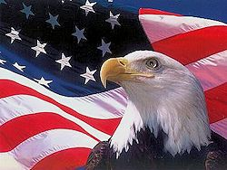
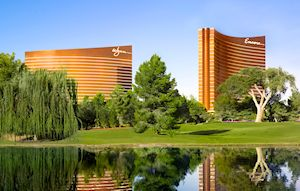
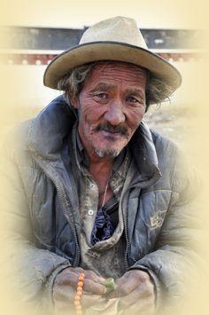

|
Karel, een gevierd zakenman van veertig met wat grijs haar, was al zeven jaar gelukkig gehuwd met Els, een gewezen fotomodel met lange zwarte haren en de perfecte maten. Dat mocht wel voor een gewezen fotomodel. Beiden hadden een goede job en konden zich de villa in Brekenwaarde en een BMW reeks 6 veroorloven.
Maar Karel had een droom die nu werkelijkheid werd. Vanaf zijn twintigste spaarde hij het geld van zijn overuren vertelde hij Els. Nú was het zover: hij had twee vliegtickets voor West-Amerika geboekt. De visa waren geregeld en in orde voor één maand. Vanuit België had hij nog een heel speciale en uiterst geheime verrassing voor zijn vrouwtje geregeld. Ze moesten enkele dagen blijven bij zijn tante Cat en oom John, die al vele jaren in de Verenigde Staten woonden, om van de jetlag te recupereren.
Op vrijdag 6 mei 2016 om 06.00 uur vertrokken ze naar Zaventem met de taxi. Hun vlucht maakte een tussenstop in München om 10.20 uur Ze vlogen om 12.00 uur naar Los Angeles en kwamen daar op vrijdag om 15.15 uur plaatselijke tijd aan. Cat en John stonden al te wachten aan de inkomhal. Na de begroeting reden ze een uurtje naar Camarillo, waar zij woonden. Ondertussen had Cat boodschappen gedaan. De lieve tante had de kampeerwagen voorzien van vele soorten etenswaren. Ze mochten zeker geen honger lijden.
Zijn oom had wel 500 keer gezegd: “Je mag enkel maar tien dollar in het casino meenemen en géén dollar meer Karel zweeg wijselijk en Els wist niets van de reis. Ze vroeg enkel aan Karel wat ze die maand in Amerika wel gingen doen. John antwoordde: “Maar Els toch, zelfs in drie maanden aan deze kant van Amerika heb je eigenlijk nog niets gezien.” Els wilde niet overkomen als een domme gans een zweeg maar.
En ze zouden zich absoluut aan de uitgestippelde reisweg houden. Ze vertrokken vanuit Camarillo naar Los Angeles en Hollywood, daarna richting Santa Barbara, Monterey, San Francisco, Reno, Yosemite National Park, Death Valley, Las Vegas en dan weer terug naar hun oom en tante. Ze hadden op dat ogenblik 2 500 km gemaakt. Zonder de kleine of grote uitstappen die ze ter plaatse nog reden, meegerekend. Ze konden die maand daar goed besteden. Karel had gerekend dat ze overal in de kampeerwagen bleven slapen.
Karel zat op hete kolen, want hij wilde zo vlug mogelijk naar Las Vegas; maar hij moest zich inhouden. Els mocht totaal niets aan hem merken Els mocht steevast beslissen waar ze verbleven en voor hoeveel nachten, op die manier kon zij zich concentreren … Zo kon zij zich concentreren op andere dingen en dan zag ze niet aan hem dat hij met de dag zenuwachtiger werd. Ze moest hem alleen beloven dat ze 14 dagen in Las Vegas zouden blijven. Els was heel tevreden. Ze had ondertussen al enkele boekjes gekocht over de aangeduide plaatsen. Voor haar ging een nieuwe wereld open ook al was ze fotomodel geweest en had ze op ontzettend veel plaatsen gewerkt. Op deze manier reizen was toch honderd keer anders. Ze maakte duizenden foto’s en zette die ’s avonds op de laptop.
Els merkte wel aan Karel dat hij meer kortaf was dan anders. Maar ja, hij had ook de reis helemaal uitgestippeld en leek een beetje zenuwachtig. Totaal overbodige stress, vond zij.
Uiteindelijk kwamen ze in Las Vegas aan. Karel zette zijn wagen aan de ingang van ‘Encore in Casino Wynn’, kostprijs $ 7 500 all-in. Geëscorteerd door een mooie dame werden ze naar hun suite begeleid. Na het uitpakken van de koffers ging Els wat rusten. Ze gingen dineren rond 19.00 uur. En de verrassing voor Els had hij er nog niet bijgeteld. Maar ze konden het zich veroorloven, zolang ze zich maar aan zijn regels hielden. Terwijl Els de suite overal bekeek, viel zij van de ene verbazing in de andere. Karel moest toch enorm veel van haar houden. “Karel, kom hier eens kijken, wondermooi!” Maar Karel viel nergens te bespeuren. “Hij zal wel nog wat moeten regelen” dacht zij verliefd. Zoals afgesproken gingen ze op tijd dineren en daarna langs de prachtige winkeltjes flaneren. Ze bleef met open mond naar alle glitter en praal staren. Morgen zouden ze naar het casino gaan. Dan waren zij ook goed uitgerust.
Om 09.00 uur gingen ze ontbijten en daarna naar de casinozalen. Els vond de fruitmachines leuk, en haar vijf dollar was al uitgegeven. Ze moest stoppen. Ze was zo verdiept in het gokken, ook in dat van anderen, dat ze niet merkte dat haar man verdwenen was. Och ja, hij wist wel wat hij deed en kon zijn plan trekken.
Karel hield van Roulette, de minimum inzet bedroeg 5 dollar maar kon oplopen tot 500 dollar. Nu maar hopen dat zijn vijf dollar iets ging opbrengen. Na de woorden, die hemels in zijn oren klonken: “Mesdames et messieurs, faites vos jeux.” Roulette spelen is eenvoudig: voorspel in welk vakje het balletje terecht zal komen. Klopt je voorspelling, dan kun je tot 35 keer je inzet terugwinnen! Spanning verzekerd. En daarna “Rien ne va plus.” Hij speelde op veilig, want hij had maar vijf dollar. Yes, hij had al de eerste keer raak: hij won. En de tweede en derde keer ook. Dat kon niet anders want ‘zijn muze’ die langs hem stond bracht hem geluk. Een rondborstige, heerlijk ruikende blondine, met een prachtige glitterjurk, die niets aan verbeelding overliet, hem lieve woorden in zijn oren fluisterde die klonken als muziek. Na verschillende keren winst, spoorde de vrouw hem aan om hogere bedragen in te zetten. Dít was het, hiervan had hij gedroomd. Lucy-Ann bracht zijn geluk tot 120 505 dollar. Nu was hij moe en ging slapen. Hij maakte Els wakker en vertelde haar hoeveel hij had gewonnen en dat maar met vijf dollar inzet. Ze vielen beiden heel gelukkig in slaap.
De volgende dagen was Karel al verdwenen om 08.00 uur. Els moest noodgedwongen alleen shoppen. Zij kon nu ongegeneerd geld uitgeven in de merkwinkels. Karel en Lucy-Ann waren weer samen. En won hij opnieuw veel geld.
Na vijf dagen samen, moest Lucy-Ann afscheid van Karel nemen. Maar misschien kon Els de plaats innemen van zijn muze. En natuurlijk deed Els dat. Ze wilde wel eens zien hoe dat allemaal in zijn werk ging. Ja, Els werd zijn tweede muze. Maar rond de middag wilde Els wat andere dingen doen en vroeg ze aan Karel of hij meeging. Oh nee, ze mocht niet weggaan. Ze was eigenlijk snel uitgekeken op het spel en liet Karel aan zijn lot over. Zijn geluk keerde zich tegen hem. Hij verloor keer op keer. Tegen de avond was hij alles kwijt. “Dit KAN toch niet! Allemaal de schuld van Els! Ze heeft mij in de steek gelaten en nu kan ze mijn verrassing wel op haar buik schrijven!” Hij had haar duur trouwkleed nog. Misschien kon hij dat wel inzetten. Dat lukte, hij moest alleen een papier ondertekenen. Zo verspeelde hij ook zijn BMW en hun villa in Brekenwaarde. Van pure ellende en met gebogen hoofd ging hij naar hun kamer. Zijn koffers stonden aan de hoteldeur. Hij kon niet meer binnen. Maar de koffers van Els waren er niet bij. Hij klopte en bonkte op de deur en riep haar naam. De veiligheid was snel bij hem en vertelde hem dat zijn vrouw hun hotelkamer had betaald en dat ze vertrokken was met de kampeerwagen.
Daar stond hij dan, de geslaagde zakenman met enkel nog de kledij die hij droeg en enkele koffers. Hij kon niet anders dan het casino verlaten.
Hij kon nergens heen, moest op straat leven en bedelen om een beetje geld. Zo kon hij iets eten en opnieuw sparen voor een visum. Het visum was maar één maand geldig geweest. Hij had tijdens de reis honderdduizenden euro’s vergokt. En toch wilde hij weer meer geld en telkens ging hij weer opnieuw gokken. Aan het visum dacht hij niet meer.
Weken, maanden en jaren gingen voorbij, zonder dat Els iets hoorde van Karel. Ze kon niet anders dan haar man als vermist opgeven.
Els kocht een leuk huisje in een andere stad. Met de Amerikareis waren in haar ogen alle puzzelstukken op zijn plaats gevallen. Haar Karel was verslaafd aan gokken. Verdiende Karel écht zo weinig? Hij werd toch goed betaald had hij haar eens verteld. Het verdwijnen van het geld op de spaarboekjes, de verkoop van hun aandelen, … de overuren die hij maakte, was dat wel waarheid of zat hij toen in een of ander casino? Och ja, voor alles had hij wel een passend antwoord klaar. Met een gokverslaafde kon en zou ze niet leven. Hij zou haar meesleuren in zijn afgrond en hun schuldenberg zou niet te overzien zijn. Na een hoop papierwerk en jaren later stond haar leven terug op de rails. Ze leerde een nieuwe vriend kennen. Van haar ex-man had ze nooit meer iets gehoord.
Ze heeft ook nooit iemand verteld wat er werkelijk gebeurd was tijdens hun verlof. Enkel dat Karel een nieuwe vrouw had leren kennen in Amerika. Niemand wist van zijn geheime en verwoestende gokverslaving.
Ondertussen leefde ze gelukkig in ‘voor- en tegenspoed’ met … Erik |